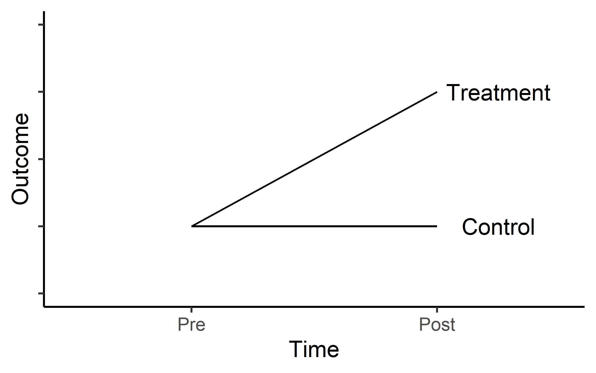
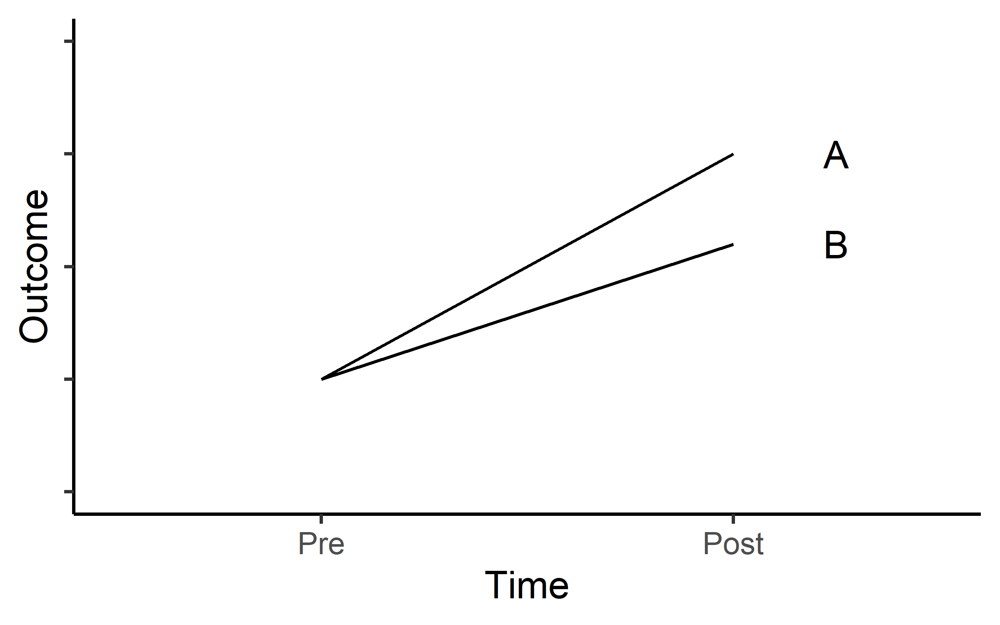
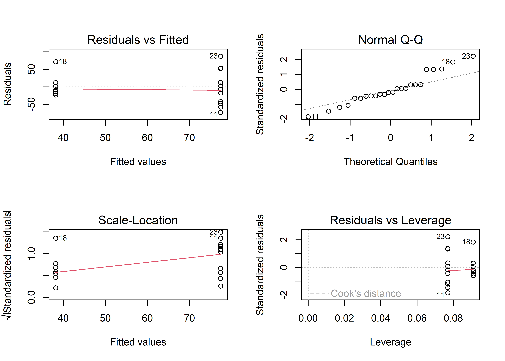

19 Pre- to post-treatment analysis
19.1 Background
In sport science (and e.g. medical-, nutritional-, psychological-sciences), intervention-studies are common. We are interested in the effect of e.g. a training method, nutritional supplement or drug. The outcome in these studies could be physical performance, degree of symptoms, muscle size or some other measure that we are interested in studying. These studies are often called Randomized Controlled Trials (RCT).
The choice of study design relates to the research-question and dictates what statistical methods can be applied. The study design affects the ability of the study to detect an effect (the power). A common case of a RCT is the parallel-groups design. In a parallel-group design participants are allocated to two or more “treatment groups”, at random, one group gets a treatment, the other group acts as the control. Usually, a measurement is made prior to the intervention (Baseline) and after the intervention. This is a common design when wash-out period is not possible and thus, the two treatment can not be compared within the same individual.
In a design where we have a Treatment group and a control group for comparison hypothesized outcomes can look something like in Figure @ref(fig:trial-design-fig).

Another common scenario is that we expect progress in two different treatments groups as in Figure @ref(fig:trial-design-fig2).

In both scenarios we are interested in the treatment effect (or the difference in effect of two different treatments). This means that we want to establish if
\[ \Delta Y_A-\Delta Y_B \neq 0 \]
meaning that the null hypothesis is that the change (\(\Delta\)) in group A is not different to the change in group B. To evaluate these studies we could do a t-test on the change score between groups. This is equivalent to a regression model where we estimate the difference between groups:
\[outcome = \beta_0 + \beta_1 Group_B\] In R, these to alternatives can be easily fitted using the code presented in code chunk (CC) 1:
# A t-test example
with(data, t.test(outcome_A, outcome_B, paired = FALSE)
# The same using a regression model
lm(change ~ group, data = data)This seemingly simple solution has some benefits but does not take into account that baseline values can affect the interpretation of a pre- to post-intervention study through regression towards the mean.
If we analyze change scores (\(post-pre\)), regression towards the mean will give an overestimation of the effect if there is, by chance, a difference in baseline values between groups (lower values in treatment group) (Vickers and Altman 2001). If we analyze follow up scores (differences in post-scores between groups), the pattern will be reversed. To fix this problem we could control for the relationship between baseline values and the change scores. This technique is called Analysis of Co-Variance (ANCOVA), where the baseline is considered the added co-variance. This is an extension of the simple linear regression model (CC2).
# Extending the linear regression equation
lm(change ~ baseline + group, data = data)We prefer the ANCOVA model over the ordinary regression model as the ANCOVA model has better power (Senn 2006). The ANCOVA model also gives unbiased estimates of differences between groups (Vickers and Altman 2001). We can use the ANCOVA model when the allocation of participants have been done at random (e.g. RCTs) meaning that differences at baseline should be due to random variation.
19.2 Exercises: Ten vs thirty RM-study
Thirty-one participants were assigned to one of two groups training with either 10 repetition maximum (RM) or 30RM, 27 participants completed the trial to the mid-study evaluation and 24 participants completed the full study. The main question in the study was whether these two different treatments resulted in different magnitudes of strength development or muscle hypertrophy (we are interested in strength).
The data is available in the exscidata package and contains the following variables:
participant: ID of participanttime: prior to pre or after the intervention postgroup: The intervention groupexercise: The exercise that was tested, legpress, benchpress or bicepscurlload: The load lifted in 1RM test (kg)
An example of loading the data and plotting the data can be seen in CC3:
library(tidyverse); library(exscidata)
data("tenthirty")
tenthirty %>%
mutate(time = factor(time,
levels = c("pre", "mid", "post"))) %>%
ggplot(aes(time, load, fill = group)) +
geom_boxplot() +
facet_wrap(~ exercise, scales = "free") +
theme_minimal()The main purpose of our analysis is to answer the question: what training method can we recommend for improving maximal strength? To try to answer this question we will (1) select a suitable 1RM test exercise, (2) choose the most appropriate statistical model. To illustrate differences between models we will compare different models (lm on the change-score, lm with baseline as a covariate, lm on post-values with baseline as a covariate).
19.2.1 Reducing the data set
For this exercise we will focus on the pre- to post-analysis of leg-press data. To filter the data set we can use the code in CC4. We will have to re-shape the data for the calculation of change scores. We do this and add a simple calculation of change scores \(post-pre\).
library(exscidata); data("tenthirty")
tenthirty_reduced <- tenthirty %>%
filter(time != "mid",
exercise == "legpress") %>%
# To get the variables in the correct order we need...
mutate(time = factor(time,
levels = c("pre", "post"))) %>%
pivot_wider(names_from = time,
values_from = load) %>%
mutate(change = post - pre) %>%
filter(!is.na(change))We are now ready to fit some models, these are outlined in CC5.
Before we look at the models, a word of caution: We should not select the model that best suit our hypothesis or belief. Instead we should formulate a model that fits our question and interpret the results from a model that meets the assumptions of the analysis (in the case of regression analysis: homoscedasticity, normally distributed residuals etc.).
In this study it is reasonable to account for the baseline difference between groups. These differences are there because of the randomization. We may account for them by including them in our analysis (as in m2 and m4). To check if the addition of the baseline helps explain the data we can perform analysis of variance when comparing two models using the anova()-function.
The null hypothesis is that the addition of the pre variable does not help explain the observed variation in the data. Comparing model 1 and 2, and 3 and 4 (these have the same dependent variable) we see that there is fairly strong evidence against the null hypothesis (CC6).1
To check if the models meet the assumptions of regression models we can use the plot function. Let’s first look at m1 comparing change score between groups.

The plots in Figure @ref(fig:m1-diagnostics-plot) suggests that there is evidence of violation of the assumption of homoscedasticity (Residuals vs fitted, larger spread in higher fitted values also evident in the scale location plot). We can also see that the residuals are not normally distributed (Normal Q-Q plot). This model is not that good.
Let’s check the model with change between groups controlling for baseline values (Model 2). To create a similar grouped plot as above, use the code in CC7
This is not a perfect model either, but the residuals looks a bit better. In fact the only model that would (almost) fail a more formal test is Model 1. The Brusch-Pagan test (see CC8) tests for heteroscedasticity.2
19.2.2 Inference
Success! Our models are somewhat OK. We may draw inference from them. It turns out that model estimating the change score or the post score does not matter when we control for the baseline. The difference between groups are exactly the same in Model 2 and 4 (CC9).
The pre variable changes as the relationship to the change is different to the relationship to post scores but the model does the same thing! This is now a question of how we would like to frame our question. If the question is “do people that train with 10RM increase their strength more than people that train with 30RM (assuming a similar baseline strength level)?” then model 2 is preferred. If the question is “are people that trained with 10RM stronger than people who have trained with 30RM (assuming a similar baseline strength level)?”, model 4 is preferred. The differences are basically semantics as the models tests the same thing, the differences between groups when controlling for baseline differences.
As we control for the baseline, we removes some of the unexplained error from the model, this will lead to a more powerful model. This is reflected in the stronger evidence3 against the null-hypothesis of no difference between groups.
19.2.3 What if the model diagnostics says the models are no good?
Biological data and performance data often exhibit larger variation at larger values. This may lead to heteroscedasticity. A common way of dealing with this is the log transformation. Transforming the data to the log scale changes the interpretation of the regression coefficients.
# A linear model with the dependent variable on the linear scale!
m.linear <- lm(post ~ pre + group, data = tenthirty_reduced)
# A linear model with the dependent variable on the log scale!
m.log <- lm(log(post) ~ pre + group, data = tenthirty_reduced)As we interpret the regression coefficients as differences the laws of the log are important to remember:
\[log(\frac{A}{B}) = log(A) - log(B)\] This means that the difference between two variables on the log scale is the same as the log of their ratio. When we back-transform values from the log scale we get the fold differences.
Let’s say that we have a mean in group A of 40 and a mean in group B of 20. The difference is 20. If we estimate the difference on the log scale however we will get (CC9):
a <- log(40/20)
b <- log(40) - log(20)
c <- 40/20
exp(a)
exp(b)
cThe exp function back-transforms data from the log scale. Back-transforming a difference between two groups (as estimated in our model) will yield the fold-difference, this can be calculated as a percentage difference. In the code chunk below the log-difference between groups is transformed to percentage differences using:
\[Percentage~difference = (1-exp(estimate)) \times 100\]
If we want to express the 30RM group as a percentage of the 10RM group we could remove 1 from the equation:
\[Percentage~of~10RM = exp(estimate) \times 100\]
The function tidy from the broom package is used to access the model output.
The 30RM group is 11.3% weaker than the 10RM group. Alternatively we can express the values as a percentage of the 10RM group. The 30RM group has a strength level that is 88.7% of the 10RM group.
Similarly to the point estimate, a confidence interval may also be back-transformed.
19.3 Case study: Single vs. multiple sets of training and muscle mass
In this study, n = 34 participants completed a resistance training intervention with multiple-set and single-set randomized to either leg. Muscle mass was measured through the use of regional estimation of lean mass with a DXA machine. In this case study we will analyze data were participants have been selected either to belong to the single- or multiple-set group. This means we will only analyze one leg per participant!
19.3.1 Prepare the data set
The data can be found in the exscidata package as the dxadata data set, use ?dxadata to inspect the different variables. The data set is quite complex, use the code below to get the correct, reduced data set.
We will randomly select participants left of right leg. To get the same estimates as in these examples you need to set the seed to 22 before the randomization (set.seed(22)).
# Copy this code to get the correct data set.
library(exscidata); library(tidyverse)
data("dxadata")
# Set the random number generator
set.seed(85)
# Create a data frame with "selected" legs
# this data frame will help us "randomize" participants to either group.
legs <- dxadata %>%
filter(include == "incl") %>%
distinct(participant) %>%
mutate(selected.leg = sample(c("L", "R"), size = nrow(.), replace = TRUE))
dxadata_reduced <- dxadata %>%
# Filter only participants completing at least 85% of the prescribed sessions
filter(include == "incl") %>%
# Select relevant columns
select(participant:sex, lean.left_leg, lean.right_leg) %>%
# Using pivot longer we gather the lean mass data
pivot_longer(names_to = "leanleg",
values_to = "mass",
cols = lean.left_leg:lean.right_leg) %>%
# Change the leg identification from the DXA machine
mutate(leanleg = if_else(leanleg == "lean.left_leg", "L", "R")) %>%
# Gather data from the training volume variable to "sets"
pivot_longer(names_to = "sets",
values_to = "leg",
cols = multiple:single) %>%
# Filter observations to correspond to the training volume variable
filter(leg == leanleg) %>%
# Join the data set with the selected legs data set
inner_join(legs) %>%
# Filter to keep only "selected" legs, these are the legs that we picked randomly above
filter(leg == selected.leg) %>%
# Select relevant variables
select(participant, time, sex, sets, mass) 19.3.2 Exploratory analysis
Use descriptive methods (summary statistics and figures to describe results from the trial). What are the mean and standard deviations of the mass variable for each time and training volume (sets). Use tables and figures to show the results.
What can you say about the effect of single- vs. multiple-sets training on muscle strength using these observations?
19.3.3 Change from baseline
Calculate the average change from baseline (pre) in each group and create a graph of the results. Make a plan of your code before you start writing it!
19.3.4 Model the change
The present data set is an example of a simple randomized trial. Participants have been randomized to either treatment before the trial and we are interested in the difference in treatment outcomes. There are several options for analyzing these data. A simple alternative would be to analyze the difference in post-training values with a t-test. This is not very efficient in terms of statistical power, i.e. we would need a lot of participants to show a difference if it existed due to differences between participants. In the case of the present data set, we have also collected more data than just follow-up scores. The baseline scores can be used to calculate a change-score which in turn can be used to compare treatments. This is a more direct comparison related to our actual question. We want to know what treatment is more effective in improving muscle mass.
Write code to test the if there is a difference between the groups in post values and change scores. Use the lm function with sets as the grouping variable.
19.3.5 Accounting for the baseline – Regression to the mean and extending the linear model
Above we created linear models from where you got exactly the same results as from the t-test. The models differed in that one model only estimated the difference in poast-scores whereas the other model assessed the differences between volume conditions in change scores. In this section we will see that the linear model is easily extended to create more robust statistics of outcome values.
When we have calculated a change score we are taking the baseline values into account. However, this score might be related to the baseline due to a phenomena known as regression towards the mean. When we do repeated testing on the same participants, test scores that were close to the upper or lower limit of a participant potential scores will be replaced with a score closer to the mean. This in turn will create a negative association between initial values and change. We could account for this by adding the baseline values as a covariate.
By adding the baseline values as a covariate we adjust the estimate of the difference between treatments to a difference between groups if they had the same baseline values.
Similarly, we can add a baseline score to the model where we only assessed baseline scores. We are now assessing the difference between post-treatment values accounting for the baseline values. This model contains the same information as the adjusted change-score model.
The two extended models discussed above may be called ANCOVA models (ANalysis of CO-VAriance). The ordinary linear models we used above can be written e.g. as:
\[Change = \beta_0 + \beta_1 \times Group\]
The extended, ANCOVA model can be written as
\[Change = \beta_0 + \beta_1 \times Baseline + \beta_2 \times Group\]
Using the DXA data dxadata_reduced, create models with the baseline values as a covariate, use the change score in one model and the post-treatment scores in the other model. Assess the difference between groups, how do you interpret it?
Can you also explain the difference between models in the relationship between the dependent variable and the baseline covariate?
Example code19.3.6 Training volume and strength - Extending the model further
In the following example we will use the isokinetic (60 degrees per second) data from the same study isok.60 to infer on the effect of single- vs. multiple-set training. We will use the pre- to post training scores for change score calculations. In the data set we have men and women, to get an unbiased association to the baseline, we will mean center the pre-values per sex.
We need to prepare the data set, we will use the same “randomization” as above, accomplished by joining the legs data set containing the “randomization” to the strengthvolume (from the exscipackage). We will have to take the maximum isometric force from each time-point as multiple tests were made. We will accomplish this by grouping and summarizing the data set. Use the code below to prepare the data before statistical modeling.
data("strengthvolume")
isom_data <- strengthvolume %>%
filter(time %in% c("pre", "post"),
exercise == "isok.60") %>%
inner_join(legs) %>%
filter(leg == selected.leg) %>%
group_by(participant, sex, time, sets) %>%
summarise(load = max(load, na.rm = TRUE)) %>%
pivot_wider(names_from = time,
values_from = load) %>%
mutate(change = post - pre) %>%
print()# A tibble: 34 × 6
# Groups: participant, sex [34]
participant sex sets post pre change
<chr> <chr> <chr> <dbl> <dbl> <dbl>
1 FP11 male multiple 230 214 16
2 FP12 female single 235 213 22
3 FP13 male multiple 281 215 66
4 FP14 female multiple 180 151 29
5 FP15 male single 258 256 2
6 FP16 female single 135 121 14
7 FP17 male multiple 235 221 14
8 FP19 male multiple 243 233 10
9 FP2 female multiple 144 132 12
10 FP20 female multiple 153 99 54
# ℹ 24 more rowsSince the ANCOVA model is a multiple regression model we can add more variables that will help explain our results. In the randomization of our version of the study females and males were slightly unbalanced between volume groups. This is a factor that we might want to adjust for. We are interested in the differences between training conditions regardless of sex-differences.
Using the data set that we created above, create two models of post-treatment values, one without the added effect of sex and one with the sex added to the model to adjsut the scores.
19.4 References
This tests is made here for illustrating the point that it usually have a relationship with the change score (or follow-up score). This test should not be done to determine if the ANCOVA model should be used or not. Since adding the baseline covariate does not make things worse we should consider it regardless(Senn 2006; Vickers and Altman 2001)↩︎
This implies that a Welch t-test could improve the situation (
var.equal = FALSE) and that heteroscedasticity in the linear model could be accounted for by variance components in a generalized least square model,glsfrom thenlmepackage)↩︎Stronger evidence in the sense that we will generally have smaller p-values↩︎